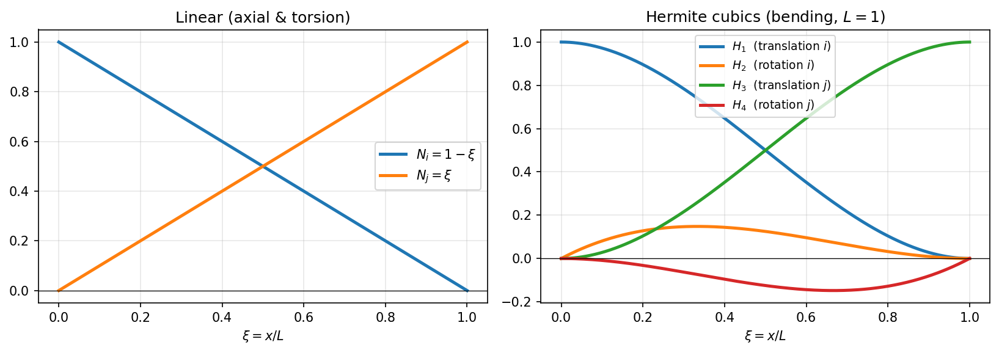

20 - Shape Functions
This page illustrates the shape functions used by the 12-degree-of-freedom Euler-Bernoulli 3D beam element, from which the displacement matrix $\mathbf{N}(x)$, the strain matrix $\mathbf{B}(x)$ and the stiffness matrix are derived.
The references in the code are BeamElement3D.shape_functions() and
BeamElement3D.strain_matrix() in beamfeapy/element.py.
1. Element degrees of freedom
The element has 2 nodes and 6 DOFs per node, for a total of 12 local DOFs ordered as follows:
$$ \mathbf{u}^e = \big[\, \underbrace{u_{x}^i,\ u_{y}^i,\ u_{z}^i,\ \theta_{x}^i,\ \theta_{y}^i,\ \theta_{z}^i}{\text{node } i},\ \underbrace{u \,\big]^{T} $$}^j,\ u_{y}^j,\ u_{z}^j,\ \theta_{x}^j,\ \theta_{y}^j,\ \theta_{z}^j}_{\text{node } j
| Index | 0 | 1 | 2 | 3 | 4 | 5 | 6 | 7 | 8 | 9 | 10 | 11 |
|---|---|---|---|---|---|---|---|---|---|---|---|---|
| DOF | $u_x^i$ | $u_y^i$ | $u_z^i$ | $\theta_x^i$ | $\theta_y^i$ | $\theta_z^i$ | $u_x^j$ | $u_y^j$ | $u_z^j$ | $\theta_x^j$ | $\theta_y^j$ | $\theta_z^j$ |
The $x$ axis is the beam axis (from node $i$ to node $j$); $y$ and $z$ are the principal axes of the section. The local coordinate is $x \in [0, L]$.
2. Decoupling of behaviors
In local coordinates, for the prismatic Euler-Bernoulli element, the 12 DOFs decouple into four independent behaviors:
| Behavior | DOFs involved | Shape functions | Stiffness |
|---|---|---|---|
| Axial (tension) | $u_x^i, u_x^j$ | linear | $EA$ |
| Torsion | $\theta_x^i, \theta_x^j$ | linear | $GJ$ |
| Bending in plane x-y | $u_y^i, \theta_z^i, u_y^j, \theta_z^j$ | Hermite cubics | $EI_z$ |
| Bending in plane x-z | $u_z^i, \theta_y^i, u_z^j, \theta_y^j$ | Hermite cubics | $EI_y$ |
3. Axial and torsional shape functions (linear)
The axial displacement $u_x(x)$ and the torsional rotation $\theta_x(x)$ vary linearly between the two nodes:
$$ N_i^{\text{lin}}(x) = 1 - \frac{x}{L}, \qquad N_j^{\text{lin}}(x) = \frac{x}{L} $$
Therefore:
$$ u_x(x) = N_i^{\text{lin}}\, u_x^i + N_j^{\text{lin}}\, u_x^j, \qquad \theta_x(x) = N_i^{\text{lin}}\, \theta_x^i + N_j^{\text{lin}}\, \theta_x^j $$
In the code (shape_functions):
NIx = 1 - x / L # N_i lineare
NJx = x / L # N_j lineare
Partition of unity: $N_i^{\text{lin}}(x) + N_j^{\text{lin}}(x) = 1$ for every $x$. This is the condition that lets the element reproduce exactly a rigid-body motion (uniform displacement) and a constant-strain state — a convergence requirement of the method.
4. Bending shape functions (Hermite cubics)
Euler-Bernoulli bending requires $C^1$ continuity (continuous displacement and rotation): the Hermite cubic functions are used. For bending in the x-y plane, the transverse displacement $u_y(x)$ is interpolated by 4 functions associated with $\{u_y^i, \theta_z^i, u_y^j, \theta_z^j\}$:
$$ \begin{aligned} H_1(x) &= 1 - 3\frac{x^2}{L^2} + 2\frac{x^3}{L^3} & &\text{(translation node } i\text{)}\[4pt] H_2(x) &= x - 2\frac{x^2}{L} + \frac{x^3}{L^2} & &\text{(rotation node } i\text{)}\[4pt] H_3(x) &= 3\frac{x^2}{L^2} - 2\frac{x^3}{L^3} & &\text{(translation node } j\text{)}\[4pt] H_4(x) &= -\frac{x^2}{L} + \frac{x^3}{L^2} & &\text{(rotation node } j\text{)} \end{aligned} $$
such that:
$$ u_y(x) = H_1\, u_y^i + H_2\, \theta_z^i + H_3\, u_y^j + H_4\, \theta_z^j $$
In the code these are the variables NIy, NIz, NJy, NJz:
NIy = 1 - 3*x**2/L**2 + 2*x**3/L**3 # H1
NIz = x - 2*x**2/L + x**3/L**2 # H2
NJy = 3*x**2/L**2 - 2*x**3/L**3 # H3
NJz = -x**2/L + x**3/L**2 # H4

On the left the linear functions $N_i, N_j$; on the right the four Hermite cubics $H_1\dots H_4$ as a function of $\xi = x/L \in [0,1]$ (with $L=1$). Note that $H_1, H_3$ equal 1 at one end and 0 at the other with zero slope at the nodes (they are tied to the translations), whereas $H_2, H_4$ vanish at the ends but have unit derivative at one node (they are tied to the rotations).
Derivation (why cubics)
Each $H_k(x)$ is a third-degree polynomial $a_0 + a_1 x + a_2 x^2 + a_3 x^3$: its four coefficients are fixed by imposing the four nodal conditions in the table below (value and derivative of the function at the two nodes). Four conditions ⇒ a degree-3 polynomial, which is the minimum degree able to guarantee $C^1$ continuity (continuous displacement and rotation) between adjacent elements. Solving the $4\times4$ linear system yields exactly the expressions of $H_1\dots H_4$ given above.
Nodal properties (interpolation)
The Hermite functions satisfy the interpolation conditions that guarantee that the coefficients are exactly the nodal values:
| Function | $H(0)$ | $H'(0)$ | $H(L)$ | $H'(L)$ |
|---|---|---|---|---|
| $H_1$ | 1 | 0 | 0 | 0 |
| $H_2$ | 0 | 1 | 0 | 0 |
| $H_3$ | 0 | 0 | 1 | 0 |
| $H_4$ | 0 | 0 | 0 | 1 |
First derivatives (rotations)
The rotation is the derivative of the displacement. The derivatives of the cubics are:
$$ \begin{aligned} H_1'(x) &= -\frac{6x}{L^2} + \frac{6x^2}{L^3} \ H_2'(x) &= 1 - \frac{4x}{L} + \frac{3x^2}{L^2} \ H_3'(x) &= \frac{6x}{L^2} - \frac{6x^2}{L^3} \ H_4'(x) &= -\frac{2x}{L} + \frac{3x^2}{L^2} \end{aligned} $$
dNIy = -6*x/L**2 + 6*x**2/L**3
dNIz = 1 - 4*x/L + 3*x**2/L**2
dNJy = 6*x/L**2 - 6*x**2/L**3
dNJz = -2*x/L + 3*x**2/L**2
5. The displacement matrix N(x)
The matrix $\mathbf{N}(x)$ is 6×12: it maps the 12 nodal DOFs onto the 6 generalized displacement fields $[u_x, u_y, u_z, \theta_x, \theta_y, \theta_z]$ at a point $x$:
$$ \begin{bmatrix} u_x \ u_y \ u_z \ \theta_x \ \theta_y \ \theta_z \end{bmatrix} = \mathbf{N}(x)\, \mathbf{u}^e $$
Important sign convention for rotations
In this library the following convention holds:
$$ \theta_z = +\frac{du_y}{dx}, \qquad \theta_y = -\frac{du_z}{dx} $$
The negative sign for $\theta_y$ derives from the right-hand rule: a positive rotation about $y$ produces a negative displacement in $z$ as $x$ increases. This convention (instead of the standard $\theta_y = +du_z/dx$) is the basis for some sign transformations throughout the library (e.g. the geometric matrix).
Filling N(x)
N = np.zeros((6, 12))
# u_x : lineare
N[0, 0] = NIx; N[0, 6] = NJx
# u_y : Hermite (piano x-y, DOF uy_i=1, rz_i=5, uy_j=7, rz_j=11)
N[1, 1] = NIy; N[1, 5] = NIz; N[1, 7] = NJy; N[1, 11] = NJz
# u_z : Hermite (piano x-z, DOF uz_i=2, ry_i=4, uz_j=8, ry_j=10)
N[2, 2] = NIy; N[2, 4] = -NIz; N[2, 8] = NJy; N[2, 10] = -NJz
# theta_x : lineare
N[3, 3] = NIx; N[3, 9] = NJx
# theta_y = -du_z/dx
N[4, 2] = -dNIy; N[4, 4] = dNIz; N[4, 8] = -dNJy; N[4, 10] = dNJz
# theta_z = +du_y/dx
N[5, 1] = dNIy; N[5, 5] = dNIz; N[5, 7] = dNJy; N[5, 11] = dNJz
Note the alternating signs in the $u_z$ and $\theta_y$ rows (indices 2 and 4): they are the direct consequence of $\theta_y = -du_z/dx$.
6. The strain matrix B(x)
The matrix $\mathbf{B}(x)$ is 4×12 and provides the generalized strains $[\varepsilon,\ \chi_y,\ \chi_z,\ \theta_x']$ from the nodal DOFs:
$$ \begin{bmatrix} \varepsilon \ \chi_y \ \chi_z \ \theta_x' \end{bmatrix} = \mathbf{B}(x)\, \mathbf{u}^e $$
where:
- $\varepsilon = \dfrac{du_x}{dx}$ — axial strain
- $\chi_y = -\dfrac{d^2 u_z}{dx^2}$ — curvature in the x-z plane (associated with $EI_y$)
- $\chi_z = +\dfrac{d^2 u_y}{dx^2}$ — curvature in the x-y plane (associated with $EI_z$)
- $\theta_x' = \dfrac{d\theta_x}{dx}$ — unit twist
The curvatures require the second derivatives of the Hermite cubics:
$$ \begin{aligned} H_1''(x) &= -\frac{6}{L^2} + \frac{12x}{L^3}, & H_2''(x) &= -\frac{4}{L} + \frac{6x}{L^2}, \ H_3''(x) &= \frac{6}{L^2} - \frac{12x}{L^3}, & H_4''(x) &= -\frac{2}{L} + \frac{6x}{L^2} \end{aligned} $$
d2NIy = -6/L**2 + 12*x/L**3
d2NIz = -4/L + 6*x/L**2
d2NJy = 6/L**2 - 12*x/L**3
d2NJz = -2/L + 6*x/L**2
B = np.zeros((4, 12))
# epsilon = du_x/dx (lineare -> derivata costante ±1/L)
B[0, 0] = -1/L; B[0, 6] = 1/L
# chi_y (piano x-z, EIy)
B[1, 2] = -d2NIy; B[1, 4] = d2NIz; B[1, 8] = -d2NJy; B[1, 10] = d2NJz
# chi_z (piano x-y, EIz)
B[2, 1] = d2NIy; B[2, 5] = d2NIz; B[2, 7] = d2NJy; B[2, 11] = d2NJz
# theta_x' (torsione)
B[3, 3] = -1/L; B[3, 9] = 1/L
7. From strains to stiffness
The constitutive matrix $\mathbf{D}$ relates the generalized strains to the internal actions $[N,\ M_y,\ M_z,\ T]$:
$$ \mathbf{D} = \mathrm{diag}!\left(EA,\ EI_y,\ EI_z,\ GJ\right) $$
def D_matrix(self):
return np.diag([E*A, E*Iy, E*Iz, G*J])
The element stiffness matrix is obtained by integration of the principle of virtual work:
$$ \boxed{\ \mathbf{k}^e = \int_0^L \mathbf{B}(x)^{T}\, \mathbf{D}\, \mathbf{B}(x)\ dx\ } $$
For the prismatic Euler-Bernoulli element this integral has a closed form and is
the one the library implements directly in stiffness_local() (see
21 - Stiffness Assembly).
For the variable-section (tapered) element, $\mathbf{D} = \mathbf{D}(x)$ varies
with $x$ and the integral is evaluated numerically with Gauss quadrature
(equivalent_local_initial_strain, _condensed_feq).
7.1 Timoshenko beams (shear deformability)
When shear=True is enabled, the shape functions $\mathbf{N}(x)$ and
$\mathbf{B}(x)$ do not change: they remain the Euler-Bernoulli Hermite cubics (the
ones used by shape_functions()/strain_matrix() to recover the deflected shape and
the internal forces). Shear deformability enters instead the stiffness matrix
through the dimensionless shear parameters $\Phi$, computed by shear_phi():
$$ \Phi_y = \frac{12\,E\,I_z}{G\,A_{sy}\,L^2}, \qquad \Phi_z = \frac{12\,E\,I_y}{G\,A_{sz}\,L^2} $$
The $4\times4$ bending block in the x-y plane (DOFs ${u_y^i, \theta_z^i, u_y^j, \theta_z^j}$) of the local stiffness becomes:
$$ \mathbf{k}_{xy} = \frac{E I_z}{1+\Phi_y} \begin{bmatrix} 12/L^3 & 6/L^2 & -12/L^3 & 6/L^2 \[2pt] 6/L^2 & (4+\Phi_y)/L & -6/L^2 & (2-\Phi_y)/L \[2pt] -12/L^3 & -6/L^2 & 12/L^3 & -6/L^2 \[2pt] 6/L^2 & (2-\Phi_y)/L & -6/L^2 & (4+\Phi_y)/L \end{bmatrix} $$
(and analogously in the x-z plane with $I_y$, $A_{sz}$, $\Phi_z$). For $\Phi = 0$ —
i.e. no shear deformability, or shear areas $A_s \to \infty$ — it collapses
exactly onto the Euler-Bernoulli stiffness. This is the closed-form
interdependent-interpolation formulation: exact for the 2-node element and free of
shear locking. References: stiffness_local() and
06 - Timoshenko and End Releases.
8. Uses of the shape functions
In addition to the stiffness, $\mathbf{N}(x)$ and $\mathbf{B}(x)$ are used for:
| Use | Formula | Function |
|---|---|---|
| Deformed shape at interior points | $\mathbf{u}(x) = \mathbf{N}(x)\,\mathbf{u}^e$ | postprocess.deformed_shape_global |
| Internal actions at $x$ | $\boldsymbol{\sigma}(x) = \mathbf{D}\,\mathbf{B}(x)\,\mathbf{u}^e$ | postprocess.internal_forces |
| Equivalent nodal forces from distributed load | $\mathbf{f}^e = \int \mathbf{N}^T \mathbf{q}\,dx$ | DistributedLoad.equivalent_local |
| Equivalent thermal forces | $\mathbf{f}^e = \int \mathbf{B}^T \mathbf{D}\,\boldsymbol{\varepsilon}_0\,dx$ | ThermalLoad.equivalent_local |
Numerical verification
The nodal properties of the shape functions can be verified directly:
import numpy as np
from beamfeapy import Material, Model, Section
m = Model()
m.add_node(1, 0, 0, 0); m.add_node(2, 4.0, 0, 0)
m.add_beam(1, 1, 2, Material(210e9, 0.3), Section(A=1e-2, Iy=1e-5, Iz=1e-5, J=1e-5))
el = m.elements[1]
L = el.length
# N(0) must extract the DOFs of node i
N0 = el.shape_functions(0.0)
assert np.isclose(N0[0, 0], 1.0) # u_x(0) = u_x^i
assert np.isclose(N0[1, 1], 1.0) # u_y(0) = u_y^i
# N(L) must extract the DOFs of node j
NL = el.shape_functions(L)
assert np.isclose(NL[0, 6], 1.0) # u_x(L) = u_x^j
assert np.isclose(NL[1, 7], 1.0) # u_y(L) = u_y^j
# The derivative of u_y at 0 is the rotation theta_z^i
assert np.isclose(N0[5, 5], 1.0) # theta_z(0) = theta_z^i
print("Funzioni di forma verificate.")
See also: 21 - Stiffness Assembly | 13 - Conventions | 06 - Timoshenko and Releases